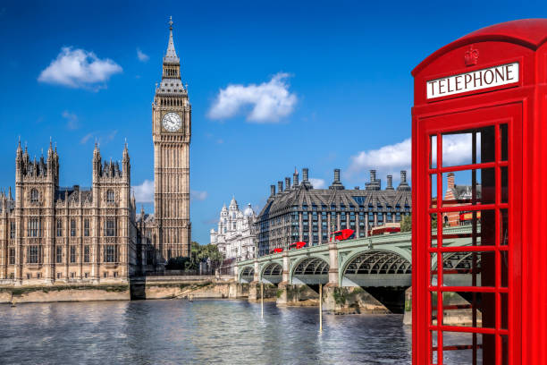

Descubre Londres
Londres es una de las ciudades más vibrantes y cosmopolitas del mundo. Visita el Big Ben, la Torre de Londres, el Museo Británico y mucho más. ¡No te lo puedes perder!
Londres es una de las ciudades más vibrantes y cosmopolitas del mundo. Visita el Big Ben, la Torre de Londres, el Museo Británico y mucho más. ¡No te lo puedes perder!